<!-- OME presentation overrides of the default theme --> <style> .reveal h1, .reveal h2, .reveal h3, .reveal h4, .reveal h5, .reveal h6 { text-transform: none; } .reveal h2 { font-size: 60px; } .crick_off_white_theme { background-color: #f2f6f9; background-repeat: no-repeat; background-image: url("images/logos/CRICK_Brandmark_01_transparent.jpg"); background-position: left 27px top +20px; background-size: 10% } .crick_theme { background-color: #fffff; background-repeat: no-repeat; background-image: url("images/logos/CRICK_Brandmark_01_transparent.jpg"); background-position: left 27px top +20px; background-size: 10% } .datatitle_theme { background-color: #fffff; background-repeat: no-repeat; background-image: url("images/logos/CRICK_Brandmark_01_transparent.jpg"), url("images/zarr_illusatrations_300dpi/clara-shares-300dpi.jpg"), url('data:image/svg+xml;utf8,<svg xmlns="http://www.w3.org/2000/svg"><text x="5%" y="5%" font-size="14" fill="black"> Henning Falk, ©2022 NumFOCUS, CC BY 4.0 license</text></svg>'); background-position: left 27px top +20px, left -350px top 200px, left -40px top 720px; background-size: 10%, 40%, 100%; } .crickAck_theme { background-color: #fffff; background-repeat: no-repeat; background-image: url("images/logos/CRICK_Brandmark_01_transparent.jpg"), url("images/zarr_illusatrations_300dpi/qui-downloads-300dpi.jpg"), url('data:image/svg+xml;utf8,<svg xmlns="http://www.w3.org/2000/svg"><text x="5%" y="5%" font-size="14" fill="black"> Henning Falk, ©2022 NumFOCUS, CC BY 4.0 license</text></svg>'); background-position: left 27px top +20px, right 10px top +50px, left 750px top +400px; background-size: 10%, 30%, 100%; } .reveal { text-transform: none; !important } .reveal section img { border-width:0; border-color: white; } .img_panel { width: 450px; } .nobullet li { list-style: none; } table.centre { width: 100%; } .reveal .centre td { text-align: center; } .rot90 { -webkit-transform: rotate(90deg); transform: rotate(90deg); } .reveal .title { position:absolute; bottom:100%; margin:5px; color:red; } #cf { position:relative; height:281px; width:450px; margin:0 auto; } #cf img { position:absolute; left:0; -webkit-transition: opacity 1s ease-in-out; -moz-transition: opacity 1s ease-in-out; -o-transition: opacity 1s ease-in-out; transition: opacity 1s ease-in-out; } #cf img.top:hover { opacity:0; } #left { margin: 10px 0 15px 20px; text-align: left; float: left; z-index:-10; width:48%; font-size: 0.85em; line-height: 1.5; } #right { margin: 10px 0 15px 0; float: right; text-align: left; z-index:-10; width:48%; font-size: 0.85em; line-height: 1.5; } </style> <!-- .slide: data-state="datatitle_theme" --> ### Manage your image data and ### analysis workflow with OMERO Ken Ho November 2025 --- <!-- .slide: data-state="crick_theme" --> ### Managing image data Why? <!-- .element: class="fragment" test --> Why can't we just save them in portable drives? <!-- .element: class="fragment" test --> or dump them in a basket? <!-- .element: class="fragment" test --> <span> <br> <font size=2> Henning Falk, ©2022 NumFOCUS, CC BY 4.0 license </font> </span> <!-- .element: class="fragment" test --> v--- <!-- .slide: data-state="crick_theme" --> ### Managing image data ### (individual perspective) * Digital data allows for quantification * Results are measurable * Organisation is key for - easy access, - reuse, re-analyse - reproducibility * Limited resources v--- <!-- .slide: data-state="crick_theme" --> #### Managing image data #### - a broader objectives 1. Keeping a record 2. Auditing - rebuke scientific/fraud challenge 3. Viewing - seeing is believing ... 4. Analysis and measurement 5. Sharing with collaborators 6. Re-use for other analysis 7. Presentation/publication 8. Filing for IP/patents 6. Public engagement/relations Notes: - archiving experiment/images, - provenance for IP/patent requirement - ensure proper handling of image data for reproducibility - scientific/mishandling/fraud challenge v--- <!-- .slide: data-state="crick_theme" --> ### Overview of existing setup (?)  <font size=2> Based on Stephen J. Royle, The Digital Cell, 2020 </font> v--- <!-- .slide: data-state="crick_theme" --> ### Problem of a paper lab notebook * Only one person can access it at any one time. * Not searchable. * Data not easily accessible * Not reusable --- <!-- .slide: data-state="crick_theme" --> ### FAIR principle <div id="left"> Findable <br> Accessible <br> Interoperatble <br> Reuseable <br> <br> (Wilkinson et al., 2016) </div> <div id="right"> <p>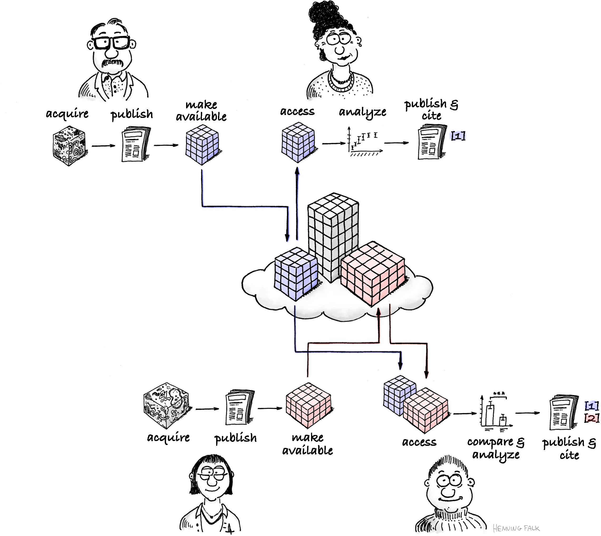</p>" <font size=2> Henning Falk, ©2022 NumFOCUS, CC BY 4.0 license </font> </div> Notes: - Mainly for open science - Principles applicable to any scientific data - The FAIR principle is for public repositories v--- <!-- .slide: data-state="crick_theme" --> ### FAIR: Findability * Requires a rich set of consistent metadata - To have a rich set of consistent metadata - Needs an essential (minimum) set of metadata. - Consistent usage of vocabulary, names, etc * **Searchable** Notes: Ideally: meta-data to be input the point of acquisition. v--- <!-- .slide: data-state="crick_theme" --> ### FAIR: Accessibility: * Downloadable, Browsable, (VPN map/connect drive) * Software accessible - e.g. open source - (e.g. free viewable apps) * Open access or authorisation/authentication - by external collaborators - by specific persons/projects Notes: Multiple resolutions, Accessing in parallel and in scale v--- <!-- .slide: data-state="crick_theme" --> ### FAIR: Interoperability: * Community supported open formats * OME-TIFF, OME-NGFF, etc. * Other proprietary but open specifications * Using open source maintained software * e.g. ImageJ, FIJI, QuPath, OMERO, etc. * Proprietary software that can import/export open formats v--- <!-- .slide: data-state="crick_theme" --> ## FAIR: Reusability: * Workflow * Multiple software can access and use the data * Reproducibility <font size=6>(Miura, Nørrelykke, EMBO, 2021)</font> - Methods reproducibility - <font size=6> Same results using same data and tools </font> - Results reproducibility (replication) - <font size=6>produce similar results using similar data/tools</font> - Inferential reproducibility (re-analyse) - <font size=6>produce same conclusion using different data/methods</font> --- <!-- .slide: data-state="crick_theme" --> ### A recommended setup * Electronic Lab Notebook * Labstep * Image Database * OMERO Plus * Making data searchable, sharable, accessible v--- <!-- .slide: data-state="crick_theme" --> ### Lapstep <p>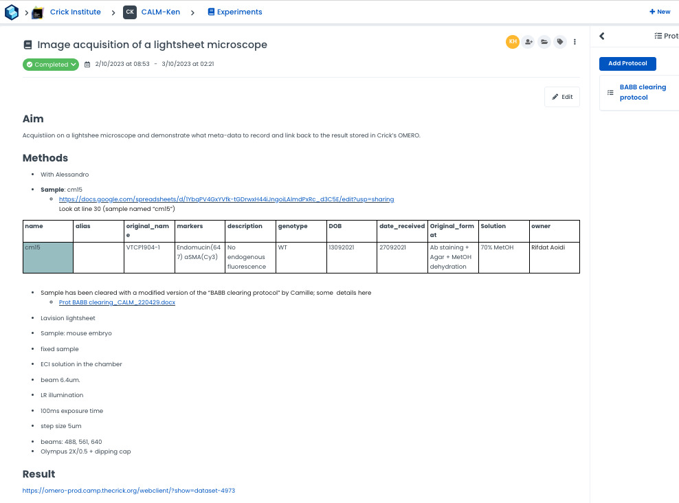</p> v--- <!-- .slide: data-state="crick_theme" --> ### OMERO <p>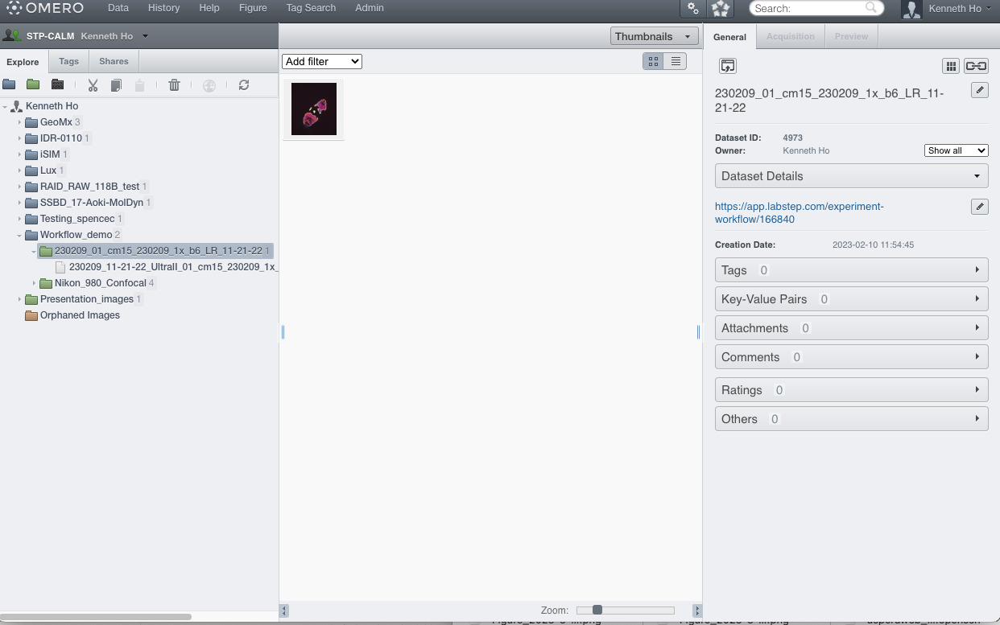</p> <br> <p>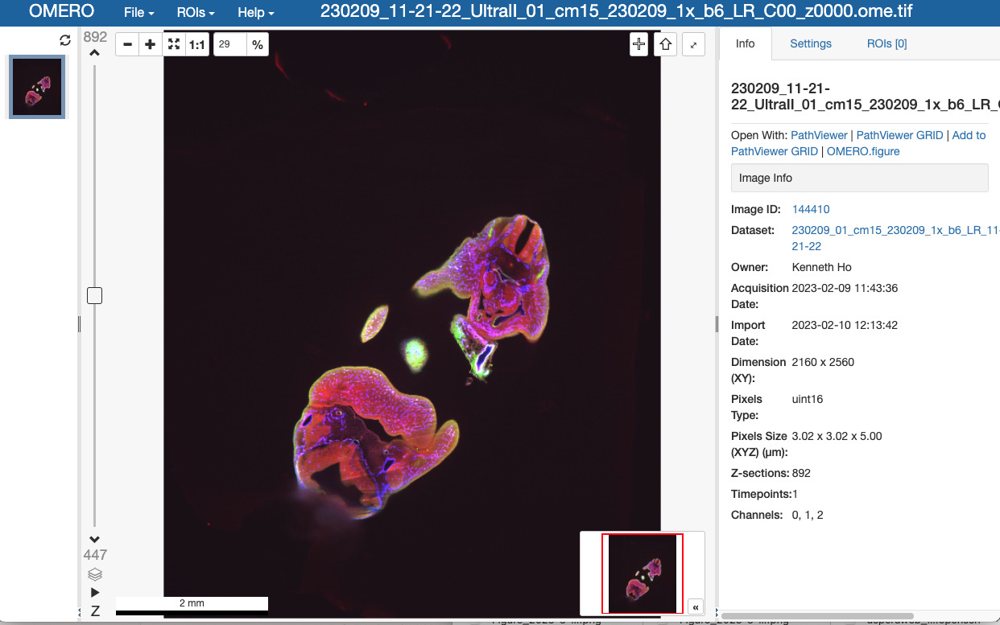</p> v--- <!-- .slide: data-state="crick_theme" -->  <font size=2> Based on Stephen J. Royle, The Digital Cell, 2020 </font> --- <!-- .slide: data-state="crick_theme" --> #### Managing image data - OMERO * OMERO is an image database * Open source * Developed at the University of Dundee. <br> <p>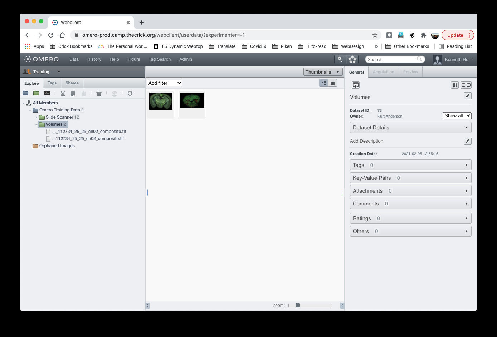</p> v--- <!-- .slide: data-state="ome_theme" --> ### Crick's OMERO * We use Glencoe Software's OMERO Plus * We started the service in 2021 * 2 instances (1 production, 1 training) * VM: 24 cores, 128GBram, ~200TB. * Uses Single-Sign-On (SSO) * Use NFS mounting NEMO storage * overlay with ACLs * Users have access to NEMO (READ-ONLY) v--- <!-- .slide: data-state="ome_theme" --> ### Crick's OMERO - stats <p>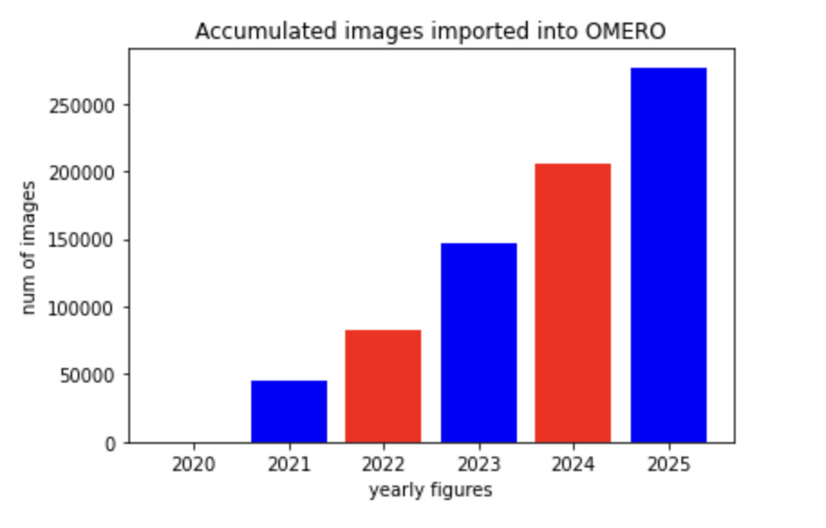</p> <p>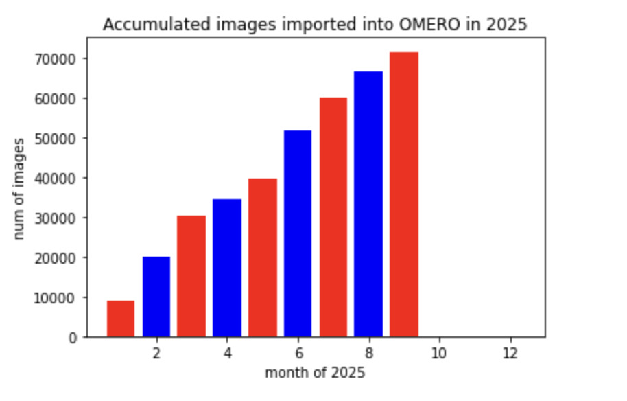</p> - Total number of users: 609 | groups: 137 - Total number of images: 276,773 - ˜180TB of image data online, 50~80TB on tape - 173 users imported 71,412 in 2025 - 1 single lab has > 75K images --- <!-- .slide: data-state="crick_theme" --> #### OMERO Basic <div id="left"> - No fee or file quota <br> - 3 columns layout <p style="margin-left:30px"> - left: Project/Dataset tree </p> <p style="margin-left:30px"> - middle: thumbnails </p> <p style="margin-left:30px"> - right: metadata </p> - OMERO only has 2 layers <p style="margin-left:30px"> - Project (Grey folder) </p> <p style="margin-left:30px"> - Datasets (Green folder) </p> </div> <div id="right"> </div> v--- <!-- .slide: data-state="crick_theme" --> #### Managing metadata <div id="left"> - OME-metadata <br> - Metadata from manufacturer <br> - Image metadata <br> - User added metadata <p style="margin-left:30px"> - tags </p> <p style="margin-left:30px"> - key-value pairs </p> <p style="margin-left:30px"> - attachment </p> <p style="margin-left:30px"> - comments </p> </div> <div id="right"> <p>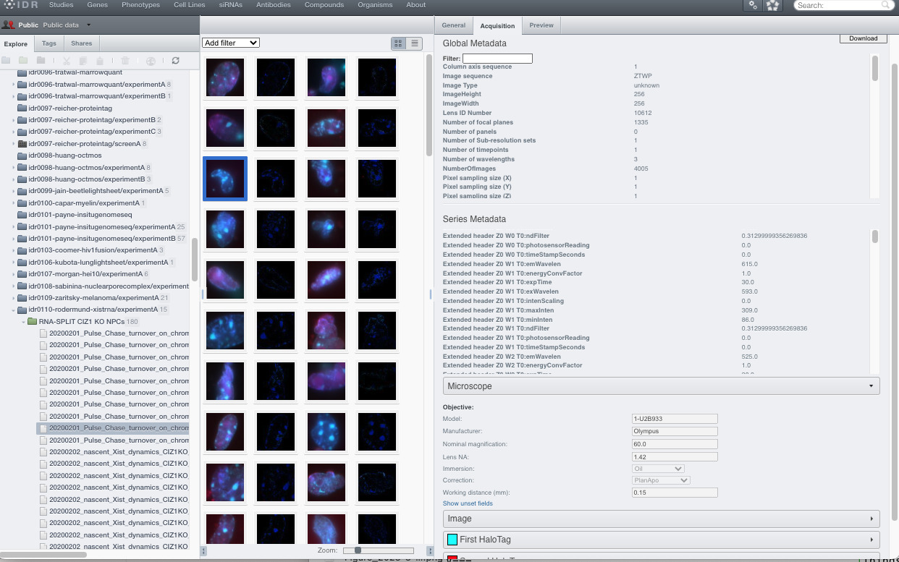</p> </div> Notes:https://code.research.uts.edu.au/MIF/OMERO-instructions/-/wikis/organising_data/csv/Managing-Key-values-with-csv-files v--- <!-- .slide: data-state="crick_theme" --> <p>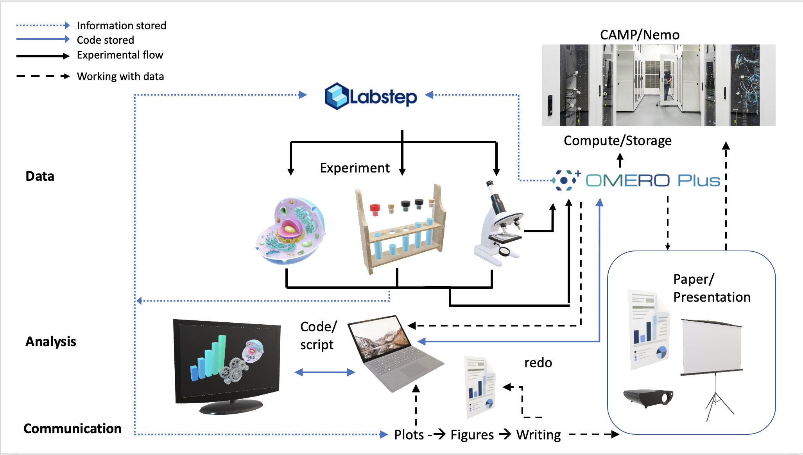</p> <br> <font size=2> Based on Stephen J. Royle, The Digital Cell, 2020 </font> <br> * [Lightsheet example](https://omero-prod.camp.thecrick.org/webclient/?show=image-148129) * [Confocal example](https://omero-prod.camp.thecrick.org/webclient/?show=dataset-4852) --- <!-- .slide: data-state="crick_theme" --> ## Findability * An example of filtering with metadata with tags and key-value pairs * [Characters](https://omero-prod.camp.thecrick.org/webclient/?show=dataset-5875) * [Mr Men](https://omero-prod.camp.thecrick.org/webclient/?show=dataset-5357) * [bioimages](https://omero-prod.camp.thecrick.org/webclient/?show=image-363704) * An example of a rich set of consistent metadata ([IDR Image ID: 13457536](https://idr.openmicroscopy.org/webclient/?show=image-13457536)) v--- <!-- .slide: data-state="crick_theme" --> ## Accessiblity * [Web browser](https://omero-prod.camp.thecrick.org)  v--- <!-- .slide: data-state="crick_theme" --> ### OMERO PathViewer <p>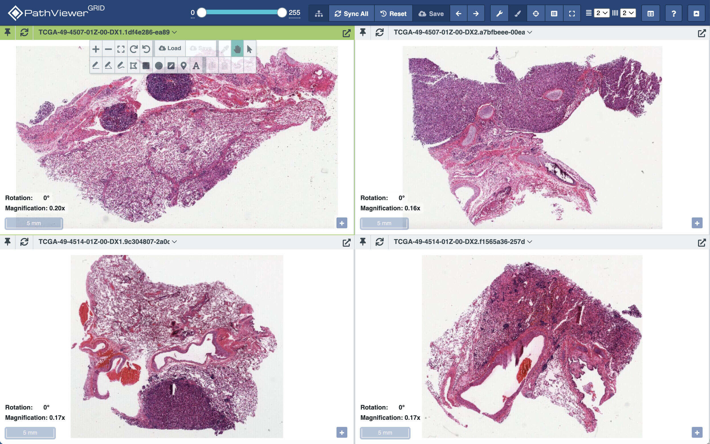</p> <br> <font size=2> NCI Genomic Data Commons (GDC); Grossman et al, 2016 </font> v--- ## Interoperability <p>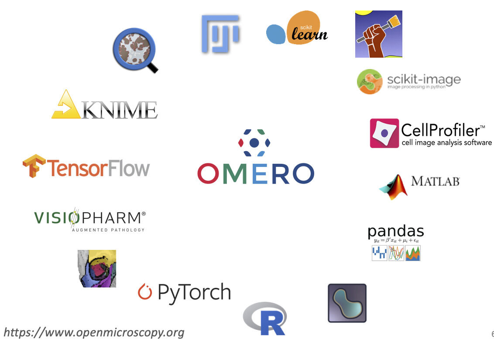</p> v--- <!-- .slide: data-state="crick_theme" --> ## Fiji + OMERO  v--- <!-- .slide: data-state="crick_theme" --> ## QuPath + OMERO  --- <!-- .slide: data-state="crick_theme" --> #### Overview of the Image Data Lifecycle  <font size=4> (A. Ciccarelli, 2021) </font> Notes: Image data lifecycle is about how image data changes over time. Biological images normally undergo various stages of processing and development during scientific research. The image data may not necessary changed, but instead intermediate image data are created through this process. The image data lifecycle is therefore refer to the whole set of image data from when the images were recorded by an instrument or a microscope through to when the image data are used to plot a graph or as a figure in an article in an academic journal and beyond. v--- <!-- .slide: data-state="crick_theme" --> ## Documenting workflow * using (Fiji) macro recorder * saving macro as attachment in OMERO <p>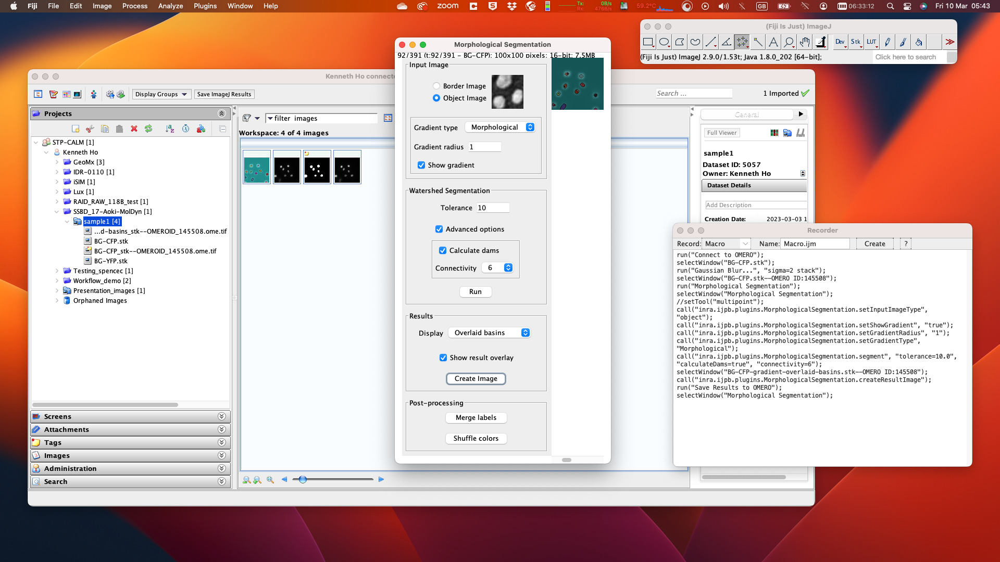</p> <font size=4> SSBD image <a href="https://omero-prod.camp.thecrick.org/webclient/?show=image-145516"> ID:3374</a>; Aoki et al. (2013) </font> Notes: no need to save the result! <!-- .slide: data-state="crick_theme" --> ## Interoperability & Reusability * API - connecting to other software * e.g. [Python API](https://docs.openmicroscopy.org/omero/5.6.0/developers/Python.html), [Java API](https://docs.openmicroscopy.org/omero/5.6.0/developers/Java.html) * [Jupyter notebook](http://localhost:8889/notebooks/omero-related/omero-scripts/getImageKeyValues.ipynb) (Python) to access OMERO image data via API ) * Other examples on [Github](https://github.com/FrancisCrickInstitute/omero-demo/blob/main/OMERO_Demo.ipynb) * Interoperable with different datasets, file formats/microscopes. v--- <!-- .slide: data-state="crick_theme" --> ## OMERO + Jupyter notebook * Application codes/algorithms can be attached within the image or link to GitHub * [Crick's OMERO - image](https://omero-prod.camp.thecrick.org/webclient/?show=image-127694) * An on-demand Jupyter notebook can be loaded using MyBinder or Google Colab. * [IDR example](https://idr.openmicroscopy.org/webclient/?show=plate-9351) --- <!-- .slide: data-state="ome_theme" --> ### Crick's OMERO * Pipeline auto-import images from instruments <p>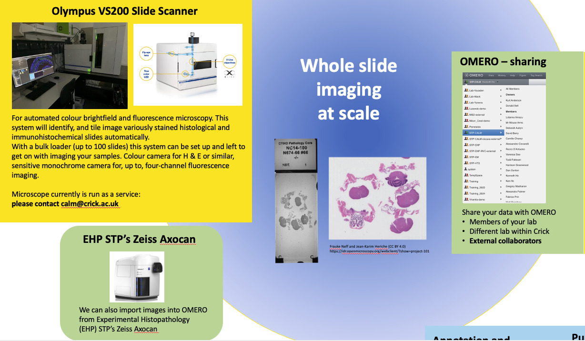</p> v--- <!-- .slide: data-state="ome_theme" --> ### Crick's OMERO <p>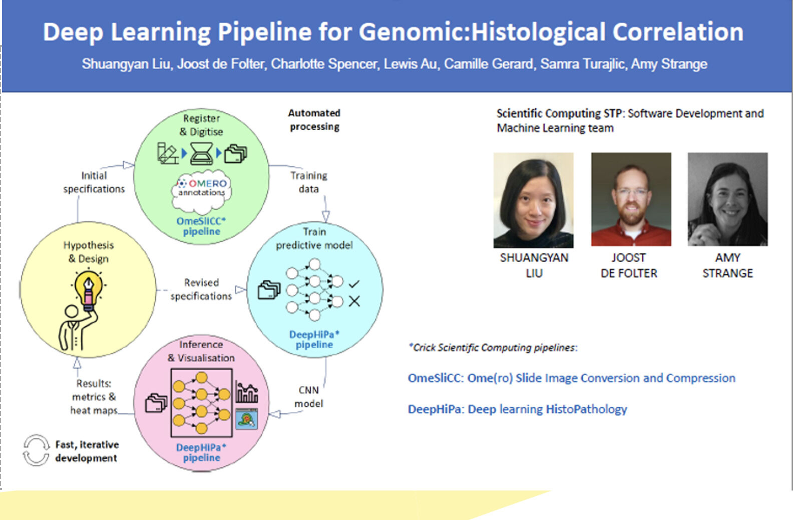</p> v--- <!-- .slide: data-state="ome_theme" --> ## How Crick labs using OMERO ### AI pipeline <p>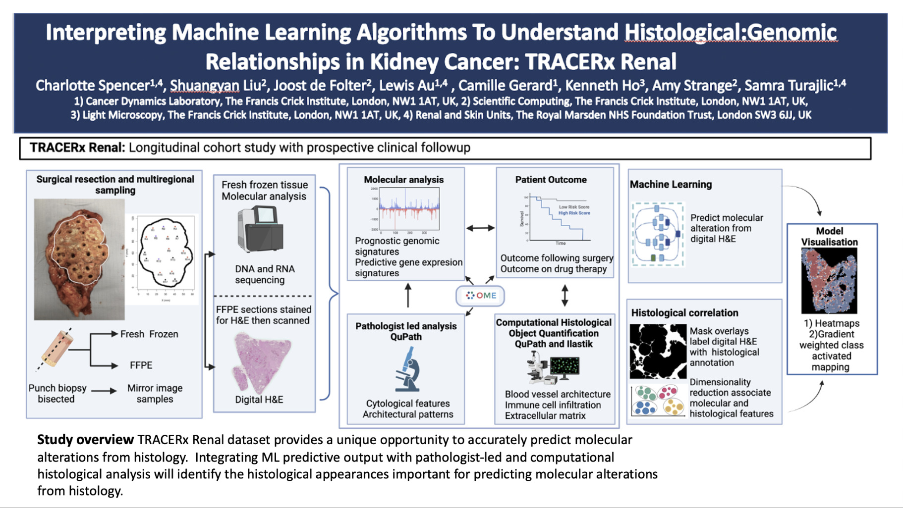</p> v--- <!-- .slide: data-state="crick_theme" --> ### OMERO collaboration * By creating separate groups, * users can share their images * At Crick, we have an external URL for access. * limited to port 80 and jpeg compression <div id="left"> <p>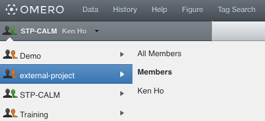</p> </div> <div id="right"> <p>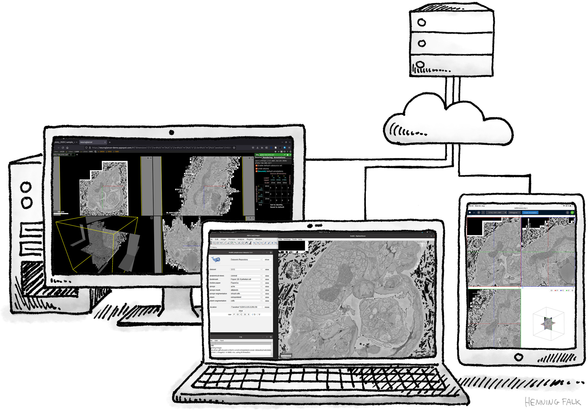</p> <br> <font size=2> Henning Falk, ©2022 NumFOCUS, CC BY 4.0 license </font> </div> --- <!-- .slide: data-state="crick_theme" --> ### OME-Zarr formats - future? ### for big image <p>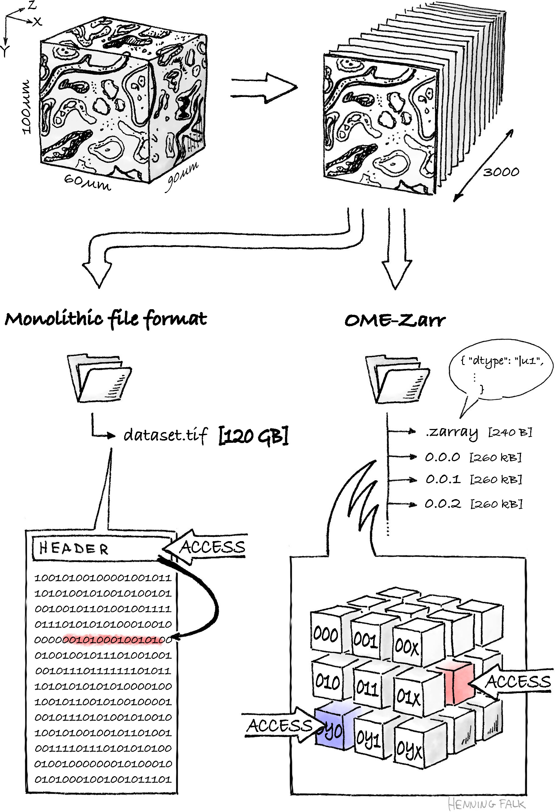</p> <br> <font size=2> Henning Falk, ©2022 NumFOCUS, CC BY 4.0 license </font> Notes: Bioformats support 160+ formats BUT not all meta-data are readable. v--- <!-- .slide: data-state="crick_theme" --> ### OME-Zarr versions * There are 2 major versions of OME-Zarr * Zarr v2 (NGFF 0.4) and Zarr v3 (NGFF 0.5). * **v2 or 0.4** is an older version * a cloud-optimized, * chunked format for random access to multi-dimensional image arrays in a hierarchical structure. * **v3 or 0.5** is the latest version * **sharding** which groups multiple chunks into larger files. v--- <!-- .slide: data-state="crick_theme" --> ### OME-Zarr and Nemo * Nemo storage is a IBM GPFS filesystem * not object storage * great for parallel read/write * optimised around 1GB per file * OME-Zarr 0.4 or Zarr v2 on Nemo * a single OME-TIFF file can create up to a million small files * Nemo quickly ran out of inodes * Managing large amount of files becomes quite tedious * Difficult to transfer to public repository v--- <!-- .slide: data-state="crick_theme" --> ### OME-Zarr and Nemo cont. * OME-Zarr 0.5 or Zarr v3 on Nemo * There are software that works well with OME-Zarr 0.5, * most notabily Webknossos. * Carles Bosch (Andreas Schaefer lab) has created many of them. * Joost/Martin also created v3 format with EM data v--- <!-- .slide: data-state="crick_theme" --> ### OME-Zarr and OMERO * OMERO currently only supports OME-Zarr 0.4 or Zarr v2. * Performance varies. * Possible to have OME-Zarr 0.5 and have external link in OMERO v--- <!-- .slide: data-state="crick_theme" --> ### OME-Zarr and image analysis * We have imported OME-Zarr 0.4 into OMERO * Image analysis via OMERO API and via Fiji OME-Zarr plug-in * Traditionally biologist likes to investigate images in 2D planes * Most of the today's tools are based on that. * It does not fit well with today's tool for image analysis workflow v--- <!-- .slide: data-state="crick_theme" --> ### OME-Zarr and image analysis * The reason is because we used 3D chunks. * Access a single image plane, of a 32x32x32 chunk OME-Zarr data * It will need to fetch 32 planes of data * It is the reverse of a beautiful example in the [OME-Zarr book](https://ome-zarr-book.readthedocs.io/storage/). * Process 3D chunks in parallel instead. * Need new GUI tools. --- <!-- .slide: data-state="crick_theme" --> ## Summary * Key points: * Use **Open** system that Crick supports * Images **with unique IDs** * Attach Images **with meta-data** * Images **link back to meta-data source** <br> <font size=2> Based on Stephen J. Royle, The Digital Cell, 2020 </font> --- <!-- .slide: data-state="crick_theme" --> ## CALM-STP * If you plan to use OMERO or to discuss image data management * Contact us: * Email: calm@crick.ac.uk * Slack us at #omero-users channel. <br> <p>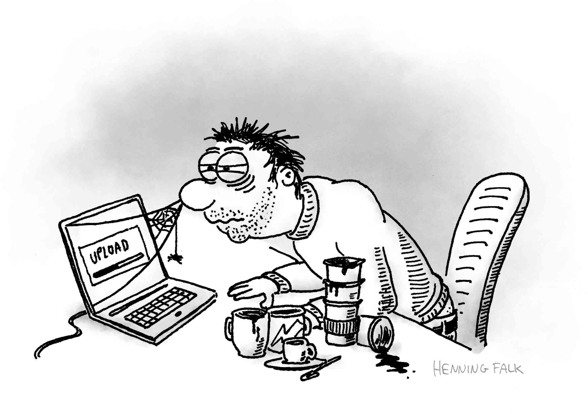</p> <br> <font size=2> Henning Falk, ©2022 NumFOCUS, CC BY 4.0 license </font>